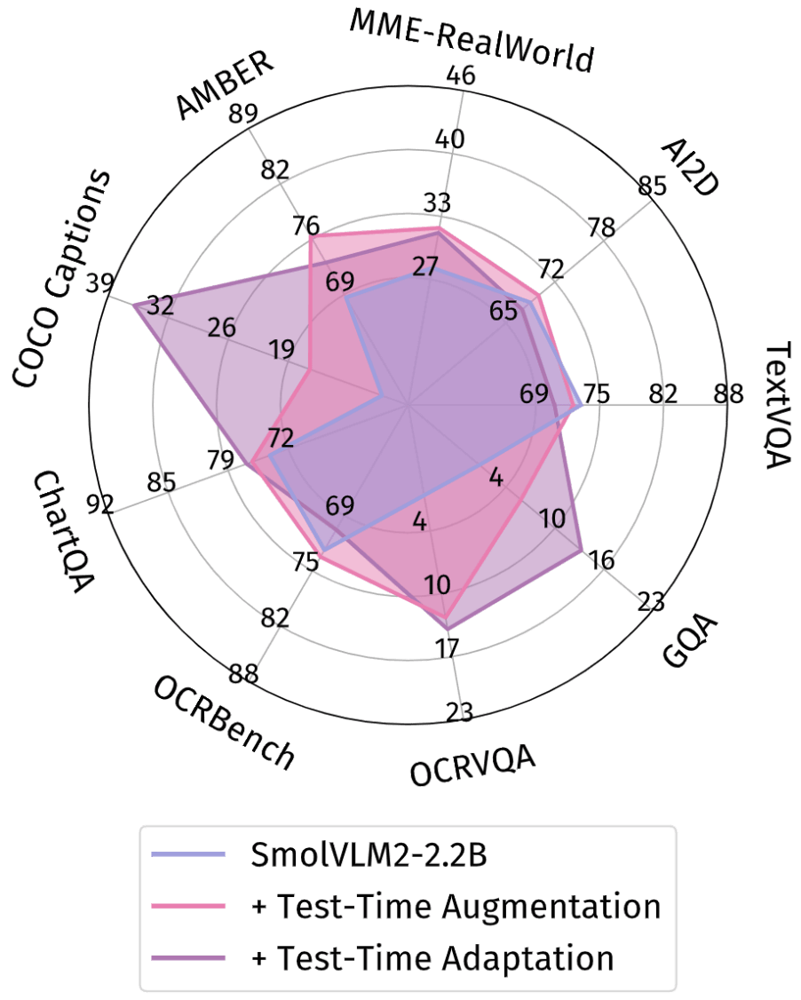
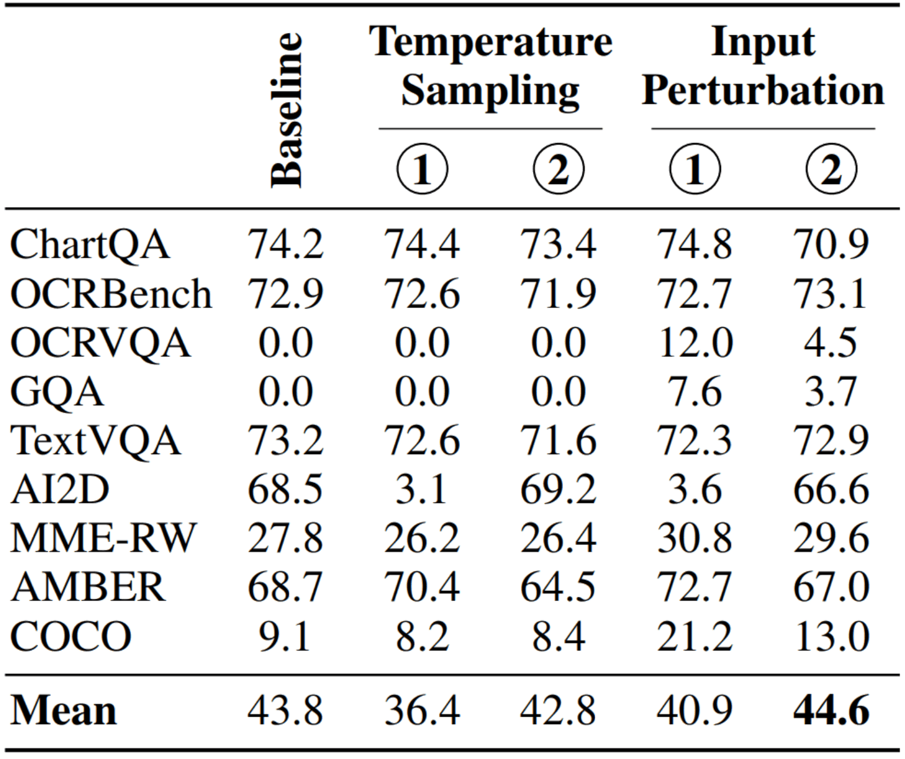
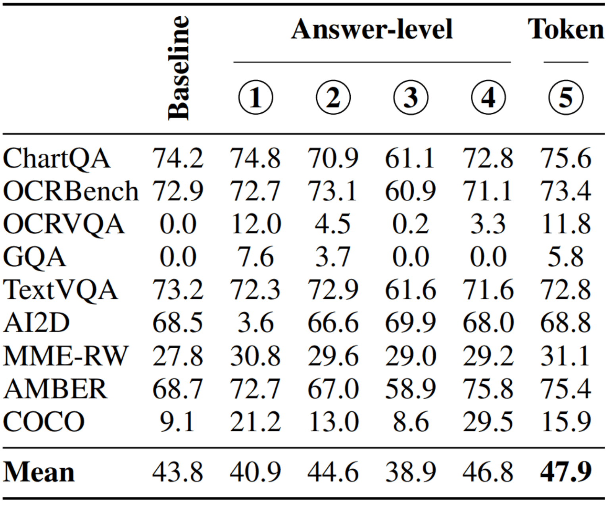
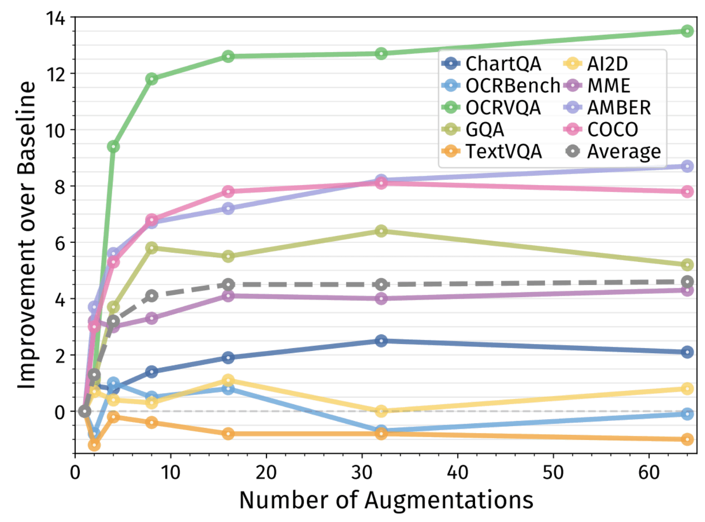
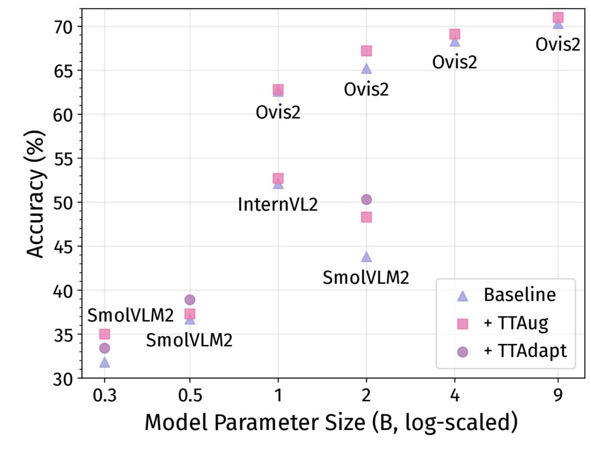

Abstract
Small Vision-Language Models (VLMs) provide a computationally efficient alternative to larger models, at the cost of weaker generalization abilities and downstream task performance. These shortcomings could be addressed by test-time scaling techniques, but existing methods are typically computationally demanding, contradicting the resource-efficient design goals of small models. To address these limitations, we propose two novel and efficient test-time scaling strategies that leverage the model-internal features rather than external supervision: (i) Test-Time Augmentation (TTAug), which generates multiple augmented inputs and aggregates outputs at the token level without parameter updates, and (ii) Test-Time Adaptation (TTAdapt), which adapts model parameters during inference using consensus-based pseudolabels from TTAug. Through extensive experiments across nine benchmarks, we demonstrate consistent performance improvements while maintaining computational efficiency suitable for resource-constrained environments. The generality of our approach is demonstrated both within models at different scales and across different VLMs without additional tuning.
Results

Our simple methods consistently boost performance across diverse benchmarks covering various task
types:
visual question answering, multiple-choice questions, yes/no questions, and image captioning.
Comparison with Other Test-Time Scaling Methods
Our methods are significantly more efficient than existing test-time scaling approaches that rely on parallel sampling, due to two key design choices: token-level aggregation and augmentation-based diversity inducement. Existing test-time scaling methods employ answer-level aggregation with temperature sampling for diversity inducement:
① Self-Consistency aggregates candidate answers via majority voting across multiple sampled outputs. While effective for tasks where final answers can be parsed, it struggles in creative or open-ended settings.
② Self-Selector uses the VLM itself as a verifier to select one response among the candidates. This approach extends applicability beyond tasks suited to majority voting.
③ Sample-and-Rank Self-Consistency ignores the model's internal signals for selection; majority voting treats all reasoning traces equally, ignoring quality variations. Sample-and-Rank leverages next-token distribution statistics to assess response quality by selecting the response with the highest log probability.
④ Self-Synthesizer The selection of only one answer, as in previous strategies, ignores information from other responses. To combine potentially correct parts from different responses, this method uses the tested VLM to aggregate responses into one coherent final answer.
⑤ Token-Level Aggregation with Simple Averaging (Our TTAug Method). Our approach aggregates the predictions at each step using a token-level aggregation of the final logits, providing more granular control and computational efficiency.
Augmentation-based diversity beats temperature sampling.
Our augmentation strategy induces better diversity than temperature-based parallel sampling.

Token-level aggregation is superior to answer-level.
By aggregating at the token level rather than final answers, we achieve better performance.

Scaling Behavior

Average performance shows monotonic improvement with saturation.
Cross-Model Generalization

Despite hyperparameters being optimized for SmolVLM2-2.2B, our methods provide
consistent improvements across diverse models,
though transferability varies by family and size.
Even with suboptimal hyperparameters, our methods yield robust improvements,
though dedicated tuning is recommended for best results.
Comprehensive Analyses
We also provide comprehensive ablation studies exploring optimal aggregation strategies, layer selection for aggregation, augmentation techniques, adaptation objectives, and the balance between computational efficiency and performance gains.
BibTeX Citation
@article{Kaya2025EfficientTTS,
title={Efficient Test-Time Scaling for Small Vision-Language Models},
author={Mehmet Onurcan Kaya and Desmond Elliott and Dim P. Papadopoulos},
journal={arXiv preprint arXiv:ARXIV PAPER ID},
year={2025},
url={https://monurcan.github.io/efficient_test_time_scaling}
}